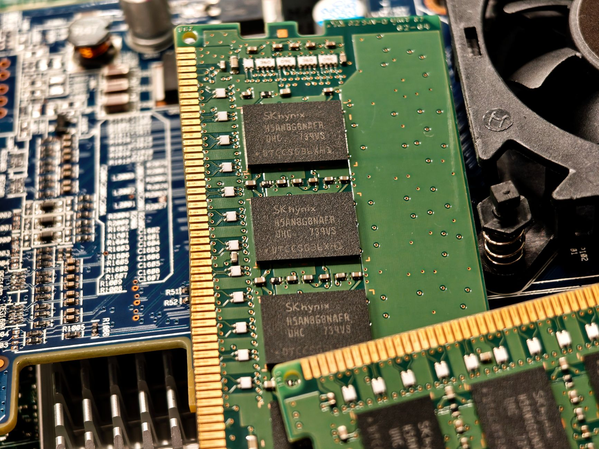

트럼프, 애플 중국산 메모리 퇴출 압박…삼성·하이닉스 반사이익

트럼프 행정부는 애플에 CXMT(창신메모리테크놀로지)와 YMTC(양쯔메모리) 등 중국산 DRAM·NAND 플래시 메모리 사용 중단을 요구했다. CXMT는 2024년 기준 글로벌 DRAM 시장 점유율을 약 5%까지 끌어올렸으며, 2026년 10% 돌파를 목표로 LPDDR5 양산을 확대 중이다.
애플은 아이폰·맥 시리즈에 삼성전자·SK하이닉스·마이크론 3사 메모리를 혼용 탑재한다. 2023년 기준 애플의 연간 메모리 조달 규모는 약 180억 달러(약 25조 원)로 추정되며, 이 중 중국산 비중이 물량 기준 10~15%에 달한다는 게 업계 추산이다.
이번 요구는 2025년 4월 시행된 엔비디아 H20 수출 금지에 이어, 반도체 공급망 압박 대상을 B2B(기업 간 거래) 칩에서 B2C 최종 소비재 조달 단계로 확장한 첫 사례다. 미국 상무부는 CXMT를 '미검증 리스트(Unverified List)' 등재 절차를 검토 중인 것으로 알려졌다.
공급자 입장에서 이 조치는 단순한 제재가 아니라 '조달처 승인 목록(Approved Vendor List·AVL)' 재편 명령이다. 애플이 AVL에서 중국산 메모리를 제외하면, TSMC·삼성 파운드리 의존도가 높은 팹리스 업체들도 연쇄적으로 중국산 메모리 배제 조건을 계약서에 삽입하게 된다.
이번 조치의 핵심은 '기술 통제'가 아닌 '조달 경로 통제'다. CXMT 메모리가 군사·AI 용도가 아닌 스마트폰에 들어간다는 사실은 중요하지 않다. 중국 반도체 기업에 달러 매출과 학습 데이터를 차단하는 것 자체가 목적이다. 화웨이 제재 때와 동일한 논리가 소비재 공급망에 그대로 적용됐다.
한국 메모리 3사(삼성·SK하이닉스·마이크론) 입장에서는 연간 최대 30억 달러(약 4조 원) 규모 추가 수요가 가시화된다. 그러나 애플이 가격 협상력을 이용해 단가를 압박할 가능성이 높다. 대체 공급자가 사실상 3사로 고정된 구조에서, 미국 정부의 '공급망 정치화'는 수요 확대와 마진 압박이 동시에 작동하는 이중 구도를 만든다.
더 중요한 변화는 중국 이외 지역 반도체 기업들의 행동 변화다. 인도·베트남에 공장을 짓고 있는 중소 팹리스 기업들이 '중국산 메모리 미탑재 인증'을 차별화 요소로 내세우기 시작했다. 공급망 정치화가 새로운 마케팅 문법을 만들고 있다.
삼성전자 메모리사업부와 SK하이닉스가 직접 수혜다. 두 회사의 LPDDR5·LPDDR5X 모바일 DRAM 합산 점유율은 약 75%로, 애플 물량 흡수 여력이 충분하다. SK하이닉스는 2025년 HBM3E 공급 집중으로 모바일 DRAM 캐파가 일부 제한된 상태이나, 삼성전자가 주 수혜 기업이 될 가능성이 높다.
마이크론은 미국 기업으로서 정치적 프리미엄까지 가져간다. 트럼프 행정부의 '미국 우선 조달' 기조하에 애플이 마이크론 비중을 현행 약 20%에서 35% 이상으로 끌어올릴 유인이 생겼다. 마이크론의 아이다호·버지니아 신규 팹 투자(총 1,500억 달러)가 이 흐름에 직접 연결된다.
CXMT는 가장 직접적인 타격을 받는다. 애플 공급망 진입을 통해 글로벌 신뢰도를 높이려던 전략이 차단됐다. 2025년 상반기까지 CXMT는 BOE·비보·오포 등 중국 내수 고객사에 전량 의존하며, DRAM 시장 내 수익성 높은 모바일 고객 확보가 3~5년 이상 지연될 것이다.
YMTC도 타격권이다. 애플 아이패드·맥북의 NAND 플래시 공급처로 진입을 노리던 YMTC는 2023년 미 상무부 엔티티 리스트 등재에 이어 소비재 조달 배제 압박까지 받게 됐다. 중국 정부 보조금 의존도가 높아질수록 국제 상업 고객 확보는 더 어려워지는 구조다.
삼성전자·SK하이닉스 주식을 보유 중이라면, 이번 조치를 '단기 모멘텀'이 아닌 '구조적 수요 증가'로 읽을 것을 권한다. 애플 연간 메모리 조달 180억 달러 중 중국산 15% 대체 수요는 약 27억 달러로, 이는 삼성전자 메모리 연간 매출의 약 3~4%에 해당한다.
한국 소재·장비 기업 중 포토레지스트·CMP 슬러리·식각가스를 삼성·SK하이닉스에 공급하는 업체들이 간접 수혜권이다. 메모리 증산 압력이 높아지면 소재 발주량도 비례해 늘어난다. 동진쎄미켐·솔브레인·한솔케미칼 등의 수주 동향을 3분기 실적 발표 전후로 점검할 필요가 있다.
구매담당자라면 중국산 메모리가 탑재된 부품·모듈 재고를 지금 점검해야 한다. '중국산 메모리 미탑재 인증' 요구가 애플 1차 벤더에서 2·3차 벤더로 전파되는 데 통상 6~12개월이 걸린다. 2026년 상반기 전에 AVL 정비를 완료하지 못하면 납품 자격 심사에서 탈락할 수 있다.
실제 조달 현장에서는 — 이미 일부 유럽·미국 EMS(전자제조서비스) 업체들이 중국산 메모리 혼재 여부를 BOM(자재명세서) 감사 항목에 추가하기 시작했다. 한국 Tier2 부품사들은 지금 당장 자사 제품에 탑재된 메모리 원산지를 소급 추적해 '비중국산 인증 문서'를 선제적으로 준비해야 한다. 인증 선점이 6개월 뒤 수주 경쟁력을 결정한다.
이 포스팅은 쿠팡 파트너스 활동의 일환으로 수수료를 제공받습니다.